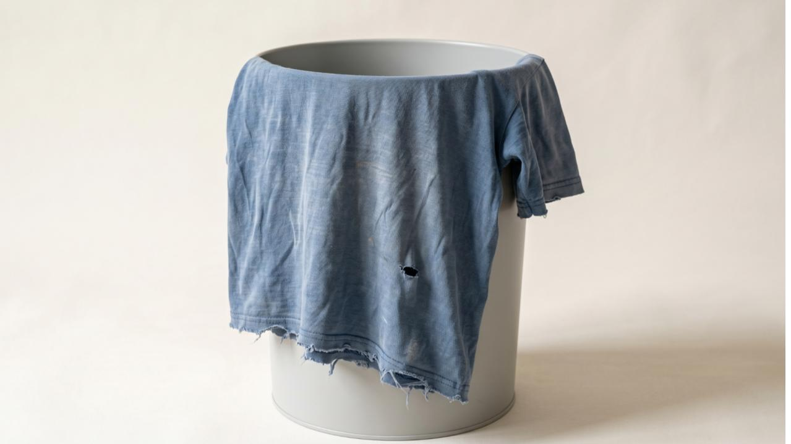

Full Circle Clothing Hack
You've been invited to a hackathon to co-create solutions to London's textile waste problem.
A day to build what the sector has been working towards.
A curated, full-day session bringing together 25 leaders across textiles, retail, and the circular economy to solve three specific, evidence-backed problems in London's clothing disposal system. Each brief is framed as a How Might We question — a concrete design challenge backed by behavioural research.
The scale of London's clothing disposal problem
What the research found
Studio Zao was commissioned by ELWA and NLWA to go beyond awareness and map exactly how Londoners dispose of unwanted clothing and where the system fails them.
We surveyed 1,014 Londoners, conducted in-depth interviews, and consulted major organisations across the sector.
The result: four behavioural personas, a systemic friction map, and three challenge briefs.
"Londoners aren't binning clothes because they don't care. They're binning them because the system has made every other route harder than the bin."
The four types of London clothing disposer
The hack focuses on The Accumulator, The Ethical Keeper, and The Seasonal Clearer — the three personas with the greatest capacity for behaviour change.

How the day works
This event is the culmination of the ELWA/NLWA venture-building project. The research is done. This is the day we put it to work.
On hack day, 25 invited leaders will work in three focused working groups, one per brief, to develop viable, stress-tested concepts.
The aim is to leave with a set of ideas that have real commitments behind them — and a clear path to building business cases and taking them forward.
The session will run under Chatham House Rules. Participants are free to use information discussed on the day, but may not attribute it to any named individual or organisation.
Why now, and why in a room together
The barriers here are structural, and they call for cross-sector thinking. Progress has been slow not for lack of effort, but because the problems span organisations, incentives, and infrastructure that no single actor controls.
If you are working in this space and want to see things move, this is a day built for that purpose. Come ready to commit.
Story Behind
the Numbers
The data tells a layered story. Most Londoners dispose of clothes through some route other than general waste most of the time. The problem is what happens at the margins — and the margins are where the volumes are growing.
The data tells a layered story. Most Londoners — across all four behavioural personas in the research — do dispose of clothes through some route other than general waste most of the time. The headline disposal split shows charity shops at 56%, collection banks at 35%, friends-and-family at 27%, and online resale at 27%. General waste sits at 20% overall. So the system isn't broken at the macro level. The problem is what happens at the margins — and the margins are where the volumes are growing.
Look at the four clusters. The Accumulator (17.5% of the sample) buys frequently, retains heavily, and when they do dispose, they default to general waste at 27% — the joint-highest rate. They are aware of the accumulation — "I'm a big, maybe too big of a shopper" — but the path from awareness to action stalls at the disposal moment because there's no route that fits their inventory.
The Pragmatic Replacer (41.8% of the sample) is functionally identical at the disposal end — also 27% to general waste — but the reason is different. They'd recycle if they had a batch worth dealing with, but a single t-shirt isn't worth researching a route for. "You can be lying if I said I did," said one participant when asked whether they recycle individual items. This is a friction problem, not a values problem.
The Ethical Keeper (12.7% of the sample) is the values-aligned cluster — high environmental and ethical drivers, lowest general waste rate at 13%, heavy users of charity shops and Vinted. But there's a hidden contradiction: this cluster has the largest secondhand acquisition gap, buying secondhand at much higher rates than they sell. The platform that enables their best behaviour also enables a quieter version of churn.
The Seasonal Clearer (28% of the sample) has the lowest general waste rate of all (8%) — reframing them as low-throughput rather than disengaged. They're rhythmic, not random. One participant's frustration that "the Oxfam bank is frequently full" and her walk uphill with heavy bags is the structural failure that turns a willing donor into a black-bin user. "I feel kind of shy going to the charity shop to donate" adds an emotional dimension the quant can't see.
What stakeholders add to this picture is system-level honesty. A sorting warehouse where reusable rates have fallen from 35% to 27%, where the trader price for sorted stock has dropped from £800 to £100 a ton, and where councils have flipped from paying collectors to charging them. Trust erosion isn't just a feeling — "a little bit of bad advertising has negative impacts across the board." EPR legislation the Treasury is unlikely to approve. The ceiling of design-led solutions: "trust me, people can't be bothered."
Where the system makes things hard is at the moment of single-item decision (no route that fits the friction), at the listing step for resale (high effort for low return), at the cultural-aesthetic margins (clothes that don't fit the dominant secondhand template), and at the trust layer (people don't believe their donations matter). The post-disposal infrastructure — collection, sorting, processing, market — is straining under volume and quality decline simultaneously. It is, as one stakeholder put it, "like Blockbuster video" — functional but on borrowed time.
Where we need to intervene: not in the major flows that already work — charity shops, online resale, collection banks. The system doesn't need another channel. It needs to capture the volume that currently leaks: the single garments that go to general waste because there's no friction-appropriate route, the wardrobe inventory that stays bagged up because the listing effort exceeds the perceived value, and the routine moments where capture would be invisible to the user. That's where the briefs need to point.
Where each type breaks down across the five stages from buying to disposal.
Read each row from left to right to follow one persona's journey from acquisition to disposal.
(how they buy)
(what builds up)
(while clothes sit)
(what prompts action)
(where clothes end up)
Source: YouGov survey of 1,014 Londoners and 8 in-depth interviews, 2026. Colour shows where a stage is working well, neutral, becoming a problem or breaking down.
"The system doesn't need another channel. It needs to capture the volume that currently leaks."
Closing the Exit Gap
"How might we make disposing of a garment circularly as low-effort as buying one, without forcing people to become sellers?"
Most Londoners who want to dispose of clothes circularly face a basic asymmetry: buying is frictionless, but selling, donating, or passing on a garment takes effort, knowledge, and time. The result is a growing pile of clothes that never move. This brief asks what it would take to close that gap, without requiring people to become resellers.
The Accumulator is London's most fashion-engaged persona. They buy frequently across multiple channels and build up wardrobes faster than they clear them. They are not indifferent to sustainability, many actively want to dispose of clothes responsibly. The problem is that the effort required to do so consistently outweighs the perceived reward. Clothes pile up in bags that never move.
"I never really throw my clothes away before."an Accumulator we interviewed
"The only thing I sold on Vinted is cat grass."an Accumulator we interviewed
"Every time I try to move, these things get in my way."an Accumulator we interviewed
Why this persona for this brief
The Accumulator's problem is structural, not motivational. They have the intent. They lack a route that matches the ease of buying. 96.6% are responsive to peer and tech-based interventions, making them highly reachable through digital channels. Peak age is 25–34 (34.5%), concentrated in East London (35%), Instagram at 84% and TikTok at 50%. They already buy secondhand at high rates, but the reverse flow, selling or passing on, stalls at the effort barrier — not digital access. The move-out moment is a high-leverage intercept: 19.8% of Accumulators cite moving as a disposal trigger, double the London average.
The acquisition gap — Accumulator profile
The Ethical Keeper is the most values-aligned persona in the research. They are environmentally motivated, deliberate about what they buy, and already using circular routes like Vinted and charity shops. But there is a hidden tension: they buy secondhand at high rates while selling at much lower rates, and many feel a quiet distrust of institutional donation routes. The gap between their values and their actions is a trust and friction problem, not a motivation problem.
"I just feel like I'm giving it to an establishment."an Ethical Keeper we interviewed
Why this persona for this brief
The Ethical Keeper's barrier is specifically about the destination, not the effort. The feeling of giving something to an institution with no visibility of where it goes or who benefits is enough to stall action. A solution that makes the recipient visible or the route transparent directly addresses this. They are 100% responsive to values-based framing, but that framing must be honest and specific, not performative.
Data context
Where they can be reached
Where clothes are going now
Areas for exploration
Design constraints
- Must serve the post-acquisition moment (the bag that does not move), not the acquisition moment.
- Do not lead with identity or values framing.
- Design for circular flow, not platform churn.
- 63.8% of Accumulators are already online and active — the problem is not digital access. Do not add channels; reduce conversion friction.
- The move-out moment is a high-leverage intercept window: estate agents, removal firms, and student housing are viable physical touchpoints for the 19.8% move-out trigger cohort.
- Cultural/aesthetic gap is a design requirement: vibrant non-Western prints and culturally specific garments are high quality but unsellable on dominant resale platforms. Solutions must account for items outside the mainstream fashion template.
The Clearout Occasion
"How might we create clear-out occasions that trigger action for people who tend to dispose in large batches only when something prompts them?"
Some Londoners do not have a disposal problem. They have a trigger problem. When they do clear out, they do it well: large batches, mostly circular routes, low waste rates. But without an external prompt, the clearout never happens. This brief is about creating the occasion, the moment, the infrastructure, the social context, that converts intent into action.
The Seasonal Clearer is one of London's most circular personas when they act. They dispose of clothes in large batches, mostly through charity shops, collection banks, and friends-and-family networks. Their general waste rate is just 8%, the lowest of all four groups. The problem is not their values or their routes. It is frequency: without a clear external trigger, the clearout does not happen, and bags of clothes sit packed but unmoved for months.
"It would be better if we have more than boxes."a Seasonal Clearer we interviewed
"I feel kind of shy going to the charity shop to donate."a Seasonal Clearer we interviewed
"Please leave near the bins and we'll collect — it would be great."a Seasonal Clearer we interviewed
Why this persona for this brief
The Seasonal Clearer is the primary target because their problem is exactly what this brief addresses: not a values gap, not a knowledge gap, but an occasion gap. 92.3% are responsive to habit-building interventions. The infrastructure to capture their clothes already exists. What is missing is the trigger that gets the bags out of the hallway. The cluster skews older (36.6% are 55+) and is 61% female. Critically, 78.2% score low on digital buying influence — solutions must be grounded in physical, civic, or postal infrastructure. 47.2% dispose in full bin bags or multiple bags at once, confirming that large-batch intake is the right design model. Move-out is not a significant trigger here (only 9.5%) — that lever belongs to the Accumulator brief.
General waste rate by persona
The Ethical Keeper is environmentally motivated and already fairly circular in their behaviour, using charity shops, Vinted, and community routes. They share one key trait with the Seasonal Clearer: they need the destination to feel trustworthy and transparent before they will act. They do not clear out in large batches, but when a clearout occasion is well-designed — with visible, credible destinations — they are highly likely to participate.
"I just feel like I'm giving it to an establishment."an Ethical Keeper we interviewed
Why this persona for this brief
The Ethical Keeper responds strongly to occasion-based prompts when those occasions include destination transparency. 95.3% are responsive to habit-building and peer/social interventions. The design requirement is clear: they need to know where their clothes are going. A clearout occasion that answers that question will capture this group.
Data context
How often do they clear out?
What's stopping them disposing more?
Areas for exploration
Design constraints
- The Seasonal Clearer needs occasion infrastructure, not messaging.
- The Ethical Keeper needs destination transparency, not frequency prompts.
- Same brief, two mechanisms: design for modularity.
- 78.2% of Seasonal Clearers score low on digital buying influence. Solutions must lead with physical, civic, or postal infrastructure — not digital prompting. A digital layer can supplement for the under-35 sub-segment only (~33.5% of C4, with 80% Instagram and 47% TikTok reach).
- 47.2% dispose in full bin bags or multiple bags at once. Design for large-batch intake — not single-item drop-off.
- The clearout occasion must not require a separate trip. Collection-to-person or neighbourhood-anchored drop points reduce the logistics barrier that converts willing donors into black-bin users.
Closing the Condition Confidence Gap
"How might we give people instant, trustworthy confidence that their unwanted garments are worth doing something with — before 'where' becomes a question at all?"
Before someone can decide where to send a garment, they need to believe it is worth sending at all. Across both primary personas in this brief, the dominant barrier at the disposal moment is not routing — it is condition confidence. "Is my stuff good enough to bother with?" comes before "where do I take it?" This brief targets that prior question: the point where a garment gets binned not because there is no route, but because the person never believed there was one.
The dominant disposal barrier in both the Accumulator and Seasonal Clearer clusters is condition anxiety, not route uncertainty. Among Accumulators: 61.6% cite items being too damaged, 46.3% cite poor quality, and the trust/quality barrier registers at 37.9% — nearly double the effort barrier (19.2%). Among Seasonal Clearers: 34.2% too damaged, 22.2% not good quality. The "easier to bin" response in both clusters partly rationalises condition anxiety — effort is often the cover story, not the root cause. Any solution that addresses routing before condition confidence will fail to unlock the primary barrier. There is also a cultural/aesthetic variant: items that are high quality but don't match the dominant platform aesthetic (vibrant non-Western prints, culturally specific garments) face self-exclusion for different reasons. Confidence tools must work across aesthetic contexts.
The Accumulator buys frequently and builds up wardrobes faster than they clear them. When they do try to dispose of clothes circularly, a key barrier is condition confidence: they are unsure whether their items are good enough to donate or sell, and that uncertainty tips the decision toward the bin. They are not lazy. They are stuck at the assessment step, before any routing decision is even possible.
"I'm a big, maybe too big of a shopper."an Accumulator we interviewed
Why this persona for this brief
71.8% of Accumulators face an information barrier at the disposal moment, specifically around condition and route. They have the volume and the intent, but they stall at the question: is this actually worth doing something with? A solution that answers that question quickly and credibly, before the bin becomes the default, directly unlocks this group.
Share facing an information barrier at the disposal moment, by persona
The Ethical Keeper cares deeply about where their clothes go, which is precisely why the information gap hits them hard. They will not donate to a route they do not trust, and they will not sell through a channel that feels opaque. Their high standards for destination transparency mean that vague or unverifiable claims about where clothes end up are enough to stop them acting entirely.
"Trust has been eroded. Consumers do care but they don't believe."a sector stakeholder
Why this persona for this brief
54.3% of Ethical Keepers face an information barrier at disposal. For this group the barrier is not about condition, it is about trust. They need to know that their garment will be used, not landfilled or exported. A solution that provides specific, verifiable destination information at the point of disposal will convert this group at high rates. They are already motivated. They just need the evidence.
Data context
What's blocking disposal — barrier type by persona
Areas for exploration
Design constraints
- Information alone does not change behaviour. The sector has tried leaflets and they failed.
- Any solution must collapse the gap between knowing and doing.
- The business model must depend on volume of garments moved, not volume of information produced.
- TRAID and Oxfam confirm that quality anxiety drives self-exclusion. Donors throw away rather than donate because they assume the item will not be wanted. The gap is perception, not reality.
- Address condition confidence before routing — "is this worth doing anything with?" must be answered before "where do I take it?" Route-first solutions will not unlock the primary barrier.
- Cultural/aesthetic variant: vibrant non-Western prints and culturally specific garments may be high quality yet unsellable on dominant platforms. Confidence tools must work across aesthetic contexts, not just mainstream fashion.